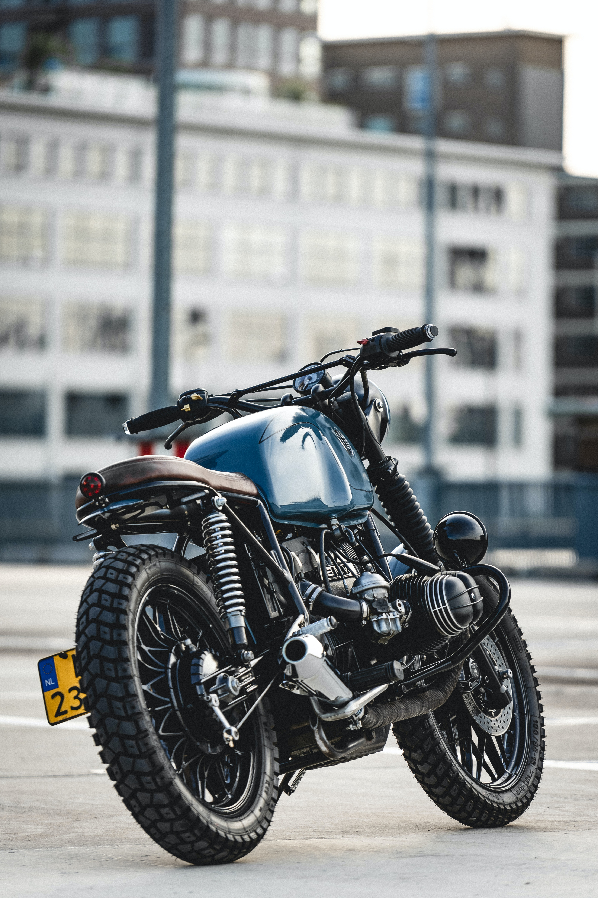

Basic Motorcycle Parts
Exploring the essential components of a motorcycle.
Engine
The engine is the power plant of the motorcycle. It converts fuel into mechanical energy to propel the bike forward. Motorcycle engines come in various types, including inline, V-twin, and parallel-twin.
Frame
The frame is the structural foundation of the motorcycle. It provides support for the engine, wheels, and other components. Frames are often made from steel, aluminum, or a combination of materials.
Suspension System
The suspension system consists of front forks and rear shocks that absorb bumps and ensure a smooth ride. It contributes to the motorcycle's handling and stability.
Wheels and Tires

The wheels, along with the tires, are crucial for the motorcycle's movement. They provide traction and stability on the road. Motorcycles can have different wheel sizes and tire types based on their intended use.